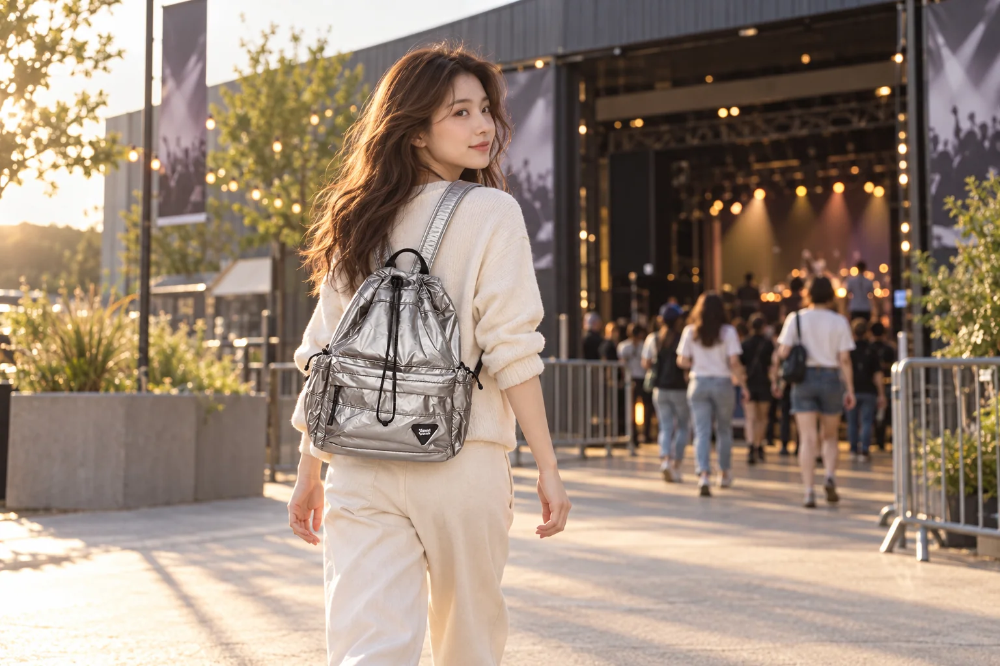

공연장 입구에서 다시 짐을 꾸리지 않으려면

공연을 보러 가는 날에는 이동할 때 필요한 짐과 공연장 안으로 들고 갈 짐을 구분할 이유가 있습니다. 가방을 모두 챙긴 뒤 입구에서 반입 안내를 처음 읽으면 보관 방법부터 다시 찾아야 할 수 있습니다. 출발 전에 해당 공연의 최신 공지를 보고, 입장 확인에 필요한 것과 관람 중 쓰지 않을 것을 나누어봅니다. 귀가 때 추가로 들 물건도 함께 생각하면 하루의 흐름이 이어집니다.
예매 당시 읽었던 일반 안내만 기억하지 않고 방문할 공연의 공지를 다시 확인합니다. 가방의 크기와 물품 제한, 보관 운영이 안내되어 있다면 그 내용을 기준으로 준비합니다. 같은 장소의 다른 행사에서 가능했던 물건이 이번에도 가능하다고 생각하지 않습니다. 명확하지 않은 항목은 주최 측의 안내된 문의 방법으로 확인하고 답을 받은 범위 안에서 정합니다.
입장할 때 꺼낼 것과 맡길 것
티켓을 보여줄 방식은 실제 예매 안내를 따릅니다. 모바일 화면을 사용할 경우 집에서 해당 화면을 열어볼 수 있는지 확인합니다. 화면을 다른 방식으로 저장했다는 이유만으로 입장에 쓸 수 있다고 생각하지 않습니다. 신분 확인 자료 등 추가 물건이 필요하다면 안내된 항목대로 준비하고 티켓과 구분해 둘 위치를 정합니다.
줄에 서기 전에 여유 있는 자리에서 입장 준비를 합니다. 가방을 오래 열어 여러 물건을 펼치지 않아도 되도록 필요한 항목을 확인하세요. 교통카드나 열쇠는 입장 때 쓰는 물건과 역할이 다르므로 같이 꺼낼 필요가 있는지도 봅니다. 작은 포켓 하나에 모두 넣었다면 티켓을 찾을 때 다른 물건이 따라 나오는지 실제로 꺼내보며 배치를 고칠 수 있습니다.
공식 보관 방법을 이용할 예정이라면 맡기기 전에 챙길 물건을 정합니다. 보관을 마친 뒤 다시 가방을 열 수 있는지 운영 방식은 실제 안내로 확인해야 합니다. 관람 중 필요한 것과 귀가에 사용할 소지품을 직접 어떻게 관리할지도 생각합니다. 제한된 물건을 깊숙이 넣어 보이지 않게 하는 방법으로 입장 준비를 끝내지 않습니다.
작은 가방을 살펴볼 제품 자료로 Himawari No.0514를 함께 소개합니다. 작은 크기를 뜻하는 옵션 이름과 공연장 반입 여부는 별도로 확인할 항목입니다. 오늘 반드시 들 물건부터 고르고 그 상태에서 입장 준비를 해보세요. 필요한 물건을 꺼내려면 다른 짐을 계속 빼야 한다면 가방을 바꾸기 전에 가져갈 묶음을 줄일 수 있는지 봅니다.

자리에 앉은 뒤의 가방 위치
관람 자리에서는 직원이 안내하는 보관과 착용 방법을 따릅니다. 가방 본체뿐 아니라 끈이 어느 방향으로 놓이는지도 봅니다. 좁은 공간에서 내가 괜찮다고 느끼는 위치가 옆 사람의 발이나 움직임과 겹칠 수 있습니다. 통로와 다른 좌석을 개인 짐의 자리로 쓰지 않고, 필요한 경우 현장 직원에게 어디에 둘 수 있는지 확인합니다.
공연이 시작하기 전에 관람 중 쓸 물건을 정리합니다. 자주 열어보지 않아도 되는 묶음을 유지하면 다른 사람 앞에서 계속 짐을 찾는 일이 줄어듭니다. 휴대전화와 촬영 기기의 사용은 공연 안내에 맞춥니다. 집에서 준비한 장비가 있다는 사실이 현장에서 사용할 수 있다는 뜻은 아니므로 허용된 범위부터 확인합니다.
겉옷을 벗는다면 가방과 옷을 각각 어디에 두었는지 기억합니다. 가방 위에 옷을 놓아두었다면 일어날 때 함께 회수해야 합니다. 공연 도중 이동할 일이 생기면 놓아둔 물건과 끈의 위치를 보고 주변 사람의 이동을 살피세요. 자리와 가방을 하나의 짐 더미로 생각하기보다 실제 놓인 두 위치를 알아두는 방식입니다.
끝난 뒤 늘어난 물건까지
공연을 마친 뒤에는 먼저 사용한 소지품을 원래 묶음으로 돌려놓습니다. 좌석과 발밑, 가방을 둔 곳을 확인하고 출발합니다. 주변이 빠르게 움직인다고 열린 가방에 물건을 급히 밀어 넣을 필요는 없습니다. 잠시 정리할 수 있는 위치에서 필요한 것을 모은 뒤 지퍼와 개인 물건을 확인하는 순서를 택할 수 있습니다.
도록이나 굿즈를 구입할 계획이라면 출발 때의 빈자리만으로 귀가 짐을 판단하지 않습니다. 실제 구입한 물건의 크기와 제공되는 포장을 봅니다. 기존 소지품을 눌러 억지로 넣는 대신 별도로 운반할 방법을 정할 수 있습니다. 종이 물건이면 꺾이는 부분과 모서리를, 입체 물건이면 포장 상태를 확인해 다음 이동을 준비합니다.
보관소를 이용했다면 수령할 물건과 확인에 필요한 정보를 챙깁니다. 받은 가방이 자신의 것인지 대조하고 안에서 꺼내 두었던 소지품도 다시 합칩니다. 보관 운영 시간을 실제 안내에 맞춰 확인하세요. 공연이 끝난 뒤의 일정에 다른 장소 방문이 있으면 새로 늘어난 짐을 그 이동에 어떻게 들고 갈지도 생각합니다.
귀가 준비에서는 티켓보다 교통 정보와 열쇠를 먼저 쓸 수 있습니다. 입장용 배치 그대로라면 이제 필요한 것이 어느 곳에 있는지 다시 정리합니다. 한곳에 멈추어 귀가에 쓸 물건을 확인한 뒤 이동하세요. 새로 산 물건의 봉투와 개인 가방을 같이 놓고 들고 갈 묶음의 수를 알아두면 중간 이동에서 확인할 기준이 됩니다.
집에 돌아오면 임시로 넣었던 포장과 개인 소지품을 나누어 꺼냅니다. 다음 공연을 위한 메모에는 실제로 사용한 준비물과 보관 과정에서 궁금했던 점을 남길 수 있습니다. 이번 안내를 다른 공연에도 그대로 적용할 수는 없지만 자신이 입구에서 어떤 순서로 준비했는지는 참고가 됩니다. 다음 예매를 했을 때는 그 순서와 새 공지를 함께 보며 가방을 다시 정합니다.